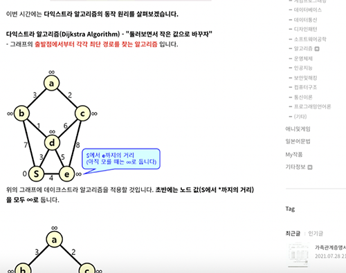

Photos

|
To have posted on my blog |
|  |
To have posted the principle of the algorithm on my blog |
Background and Purpose
This is to organize my knowledges and be good at writing.
This is to organize my knowledges and be good at writing.
Process to have Strengthened Abilities
I always thought about what kind of information to post on the blog while taking a break or before going to bed. When I was writing, I tried to explain as much as possible after thinking for a long time on how to read and understand it at once. If you do not know how to explain it, you must quote the explanation written in Wikipedia and then explain it again, and be sure to indicate the source. After this explanation, important information is bolded, and more important information is displayed in red. And I tried to include at least one image because it is easy for readers to understand it when it is visualized with an image. After going through this process, I was able to post an optimized article.
I always thought about what kind of information to post on the blog while taking a break or before going to bed. When I was writing, I tried to explain as much as possible after thinking for a long time on how to read and understand it at once. If you do not know how to explain it, you must quote the explanation written in Wikipedia and then explain it again, and be sure to indicate the source. After this explanation, important information is bolded, and more important information is displayed in red. And I tried to include at least one image because it is easy for readers to understand it when it is visualized with an image. After going through this process, I was able to post an optimized article.
Strengthened Abilities
- Implementation, problem-solving ability, and organizing ability : It has been strengthened through the process of writing and posting on the blog.
- Inquiry : Contemplating how to express it, and quoting content that you do not know has been strengthened.
Further Explanations